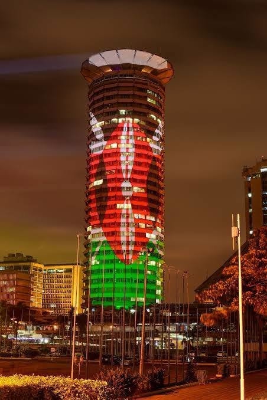

KICC lit up in tribute to Raila Odinga as ODM opens "Mwezi wa Baba"
News
Nairobi's Kenyatta International Convention Centre (KICC) became a canvas for a light display honouring the late former Prime Minister Raila Odinga on Friday evening, while supporters in other parts of the country held remembrance events of their own.
The projection formed part of a countrywide candle-lighting led by the Orange Democratic Movement (ODM), which kicked off its October programme, named "Mwezi wa Baba", in memory of Raila, widely known as Baba.
Clips posted on ODM's official X account showed a glowing image of Raila circling the landmark tower, with the words "Baba Raila Odinga" displayed near the top of the building.
Source: videos shared on ODM's official X account.